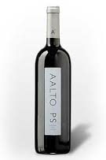
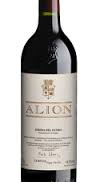
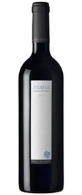
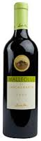
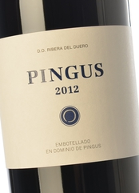

Ribera del Duero es una denominación de origen a la que se acogen viñedos localizados en Castilla y León (España), dentro una franja de la cuenca del río Duero, de unos 115 kilómetros de longitud y 35 de anchura, situada en la confluencia de las provincias de Soria (19 municipios), Burgos (60), Segovia (4) y Valladolid (19).3 Comienza aproximadamente por el este en San Esteban de Gormaz y se extiende hasta Quintanilla de Onésimo en el oeste. A finales de 2005, los cultivos de la zona constituían aproximadamente el 2% de toda la extensión dedicada al cultivo de la vid en España. Comprende una superficie de viñedo inscrita de 20.956 Has.
Los vinos de la D.O. Ribera del Duero son fundamentalmente tintos, aunque también existen rosados. La variedad de uva más característica es la denominada genéricamente Tinta del país, conocida en el mundo del vino como Tempranillo, la cual constituye más del 90% de la producción. Según las normativas del Consejo Regulador, para que un vino pueda acogerse a la denominación de origen debe incluir al menos un 75% de Tempranillo en su elaboración. En total, no menos del 95% de la uva debe ser Tempranillo, Cabernet Sauvignon, Merlot y Malbec. Las uvas Garnacha y Albillo están permitidas, pero en pequeñas cantidades.
|  |
Aalto PS 2005.Mariano García ha dejado su inconfundible sello en este magnífico tinto. Un vino excepcional, que se elabora solamente en las mejores añadas, y procedente de uvas de pequeños pagos. Aalto PS saltó a la fama internacional cuando la añada 2001 fue puntuada con 98+ por Robert Parker y elegida como "Mejor Vino del Año" en España. En esta ocasión, Mariano García ha conseguido elaborar un soberbio tinto de gran estructura y frutosidad, de corte moderno. Un vino que muestra la complejidad que la uva Tempranillo es capaz de ofrecer: estructura, amplitud, equilibrio, madurez y finura. Además, la añada 2005 se caracteriza por mostrar una mayor frescura, gracias a un marcado carácter balsámico. | |
|  |
Alión 2004.Alión 2004 nace de una añada calificada como Excelente en la D.O. Ribera del Duero y está elaborado con tempranillo a partir de cepas con una edad que ronda los 30 años. Alión nace a mediados de los ochenta, cuando la mítica firma Vega Sicilia (dirigida por la familia Álvarez) decide elaborar un vino de corte más moderno. Con la idea de separar ambos conceptos, crearon una nueva bodega totalmente independiente que en 1995 alumbró el primer Alión. Desde entonces, Alión es uno de los vinos con mejor relación calidad-precio de toda la Ribera del Duero. | |
|  |
María Alonso del Hierro 2005.Este vino ha tenido una crianza de 18 meses en barricas nuevas de roble francés. El vino tinto María de Alonso del Yerro sólo se elabora cuando la añada lo permite, sólo las mejores añadas. Obtuvo 96 puntos en la Guía Peñín. Servir este vino a una temperatura entre 16º y 18º, antes de ser servido es recomendable decantarlo. Graduación Alcohólica de El Vino Tinto María de Alonso del Yerro: 14.50 grados Vista En vista se presenta color picota, en nariz se presenta con aromas muy ricos y con gran presencia frutal. Notas a vainilla, minerales, ahumados... En boca se presenta complejo y estructurado. Final largo y sobresaliente. | |
|  |
Emilio Moro, Malleolus de Sancho Martín, 2009 .Una de las cuvées más sublimes de la bodega Emilio Moro, este Malleolus es un tinto de pago, elaborado con uvas procedentes del viñedo de Sancho Martín, situado en el término municipal de Pesquera de Duero y cuya superficie no abarca siquiera una hectárea. Las cepas allí plantadas, hace aproximadamente 50 años, ofrecen un vino poderoso, intenso y persistente, que cautivará a los amantes de los vinos castellanos más auténticos y singulares. Aroma complejo y elegante, sutiles notas florales que acompañan al regaliz, mora y grosella. Con las notas balsámicas de la madera perfectamente integradas en el conjunto del vino. En la boca es cálido y goloso, equilibrada acidez y un tanino de gran calidad que acaricia el paladar. Postgusto cálido y de gran recorrido. Elaborado con uvas procedentes del Pago de Sanchomartín. Viñedo de 0,85 Ha en Pesquera de Duero, situado sobre una ladera del margen derecho del río Duero. La plantación se realizó en 1964, injertando sobre 110 Ritcher, con púas procedentes del Clon de los viñedos más antiguos de la familia. Vinificación: 32 días de maceración en depósitos de 3.000 Kg, fermentación maloláctica y posterior estancia de 22 meses en barrica de roble Francés. Este vino tiene una graduación de 14.5 grados. Se sugiere que se acompañe con asados castellanos. Tipo de Uva Tinto Fino. | |
|  |
Dominio de Pingus 2005:.El Pingus se elabora exclusivamente a partir de dos viejas parcelas de tinto fino de La Horra que, en total suman 4,15 Ha. La llamada Parroso le hace de columna vertebral y la San Cristóbal le aporta la elegancia. Esta cosecha se vendimió en un solo día, el 26 de septiembre. Como de costumbre en el estilo Pingus, desgranado a mano grano a grano, fermentación en tinas de roble abiertas y maloláctica en barrica. Excepcional porque hasta el 2005 el Pingus se criaba exclusivamente en barrica nueva de Darnajou, y por primera vez con el 2005 se incorporan unas nuevas barricas, tan raras como caras de Taransaud. Es una maravilla. Tiene el tanino refundido. Tiene la textura fluida-espesa, con intensidad y a la vez elegancia. Al final, vuelve el perfume que dura y se mantiene casi un minuto. Catado en abril de 2006. Consumo ideal 2013 - 2045 a una temperatura de servicio de 16 a 18 ºC. Recomendamos decantar más de una hora |